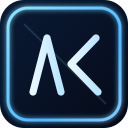
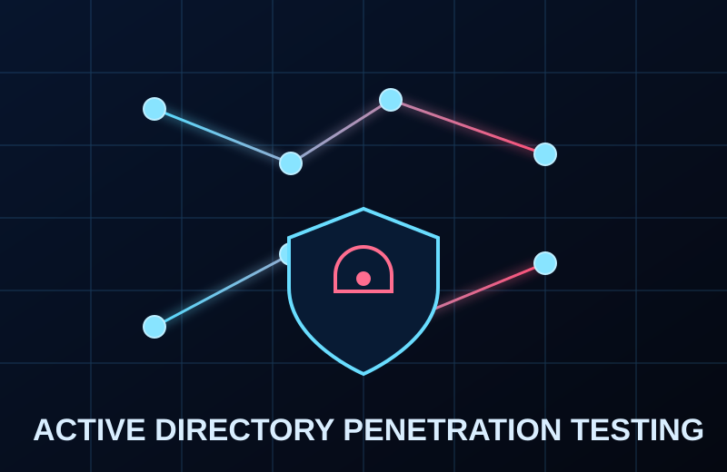

SIEM & Detection Engineering
- ArcSight
- Splunk
- Seceon
- Securonix
- KQL Detection Logic

SOC PRE-BOOT
[INIT] SOC telemetry pipeline booting...
Correlating global attack traffic 0%
DEFENSE MODE: AGGRESSIVE
Blue Team | Security Operations Centre | Incident Response
Leading Blue Team Defense and Security Operations
Experienced Deputy Manager and Security Operations leader focused on threat detection, EDR/SIEM engineering, and incident response at enterprise scale.
Current Focus: SOC Process Hardening and XDR Enablement
Operating Region: Ahmedabad, Gujarat, India
Contact: akshaykoshti97@gmail.com
Initializing SOC telemetry...
Profile
With over 4 years of hands-on cybersecurity experience, I work at the intersection of Security Operations, incident response, and enterprise security engineering. I currently serve as a Deputy Manager, leading multi-client security initiatives, SOC process improvements, and blue-team programs designed for faster detection and stronger response.
Across organizations including Colgate, Adani, and TechD Cybersecurity, I have managed end-to-end SOC workflows from alert monitoring and triage to investigation, threat containment, and executive reporting. My practical exposure covers SIEM operations, EDR lifecycle management, phishing simulation infrastructure, cyber drill execution, and continuous security posture enhancement.
I have worked deeply across ArcSight, Splunk, Seceon, and Securonix, and led operational delivery for endpoint platforms such as CrowdStrike, Microsoft Defender, Bitdefender, SentinelOne, and Seqrite. Alongside this, I contribute to threat intelligence and external attack surface programs to support proactive defense, risk reduction, and SOC maturity at enterprise scale.
Visual Stack


Capabilities
Journey
Impact
Credentials
Cloud Security
Offensive Security
Digital Forensics
Mobile Forensics
Community Leadership
DLP
SIEM / XDR
SIEM / XDR
Endpoint Security
Security Leadership
Security Operations
Red Team Operations
Threat Intelligence
SIEM
Research & Projects

M.Sc. Cyber Security | Major Project
Led a full security assessment of enterprise Active Directory across on-prem and cloud environments to map privilege escalation paths, misconfigurations, and high-impact vulnerabilities.

M.Sc. Cyber Security | Minor Project
Assessed Docker environments for vulnerabilities and container-escape risks, then implemented hardening and DevSecOps-aligned controls to strengthen container security posture.

M.Sc. Cyber Security | Minor Project
Built a proof-of-concept attack scenario for malicious USB charging stations to demonstrate data exfiltration and malware delivery risks, followed by mitigation guidance.

B.E. Computer Engineering | Major Project
Developed a full-stack comic creation platform enabling users to create, edit, and share digital comic strips with authentication, database integration, and responsive UI.

B.E. Computer Engineering | Minor Project
Created a leave workflow platform for request submission, approval, balance tracking, and reporting to improve transparency and reduce manual process overhead.

Colgate | Security Operations & Threat Intelligence
Investigated impersonating and suspicious public applications using EASM and OSINT workflows, validating authenticity through signatures, metadata, and threat intel correlation to reduce brand abuse risk.

Adani | Endpoint Security Operations
Managed operational handover and administration of CrowdStrike and Microsoft Defender, tuned policies for coverage, and resolved endpoint compliance gaps with governance reporting.

Adani | Microsoft Security Program
Executed large-scale endpoint migration using controlled workflows and BigFix orchestration to transition endpoints securely while maintaining continuous security visibility during acquisition-led change.

Adani | Microsoft 365 Security
Supported Microsoft security licensing migration and optimized policy baselines through assessment outputs, including domain allow/block review to reduce exposure and align with best practices.

Adani | Secure Communication Validation
Performed security validation of executive secure-email infrastructure, checked attack vectors, and verified policy consistency with Microsoft 365 controls for controlled, residency-focused communication.

Adani | Threat Intelligence Investigation
Deployed Browser Exploitation Framework in a controlled environment to support investigations related to malicious misinformation activity and improve attribution visibility for threat response teams.

TechD Cybersecurity | Awareness Engineering
Designed and deployed on-prem phishing simulation infrastructure with GoPhish and multi-SMTP routing, tracking open/click/credential metrics while onboarding a commercial platform for scalability.

TechD Cybersecurity | Incident Readiness
Ran a ransomware-focused cyber drill with leadership and core stakeholders to test incident communication, recovery workflows, and response readiness while identifying operational resilience gaps.
Connect
Direct Channels
Open for SOC analyst and blue-team operations engagements.
Phone+91 962412XXXX
LocationAhmedabad, Gujarat, India
LinkedInlinkedin.com/in/akshaykoshti
GitHubgithub.com/akkidroid